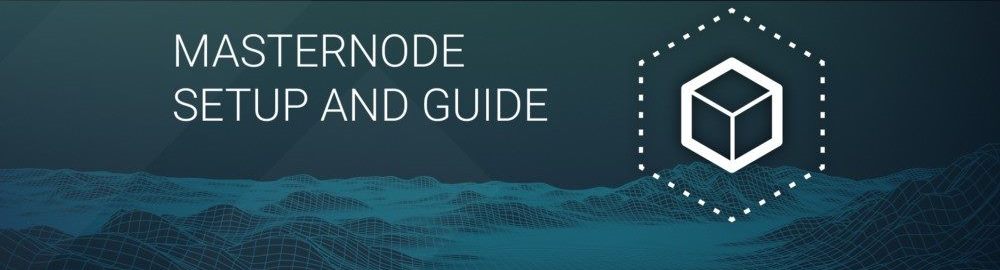

Blockchain technology provides many different ways to earn income. This is the main reason why so many investors are drawn to this space. While most of the bitcoin and altcoin investments require active participation in the market, there are ways to earn passive income. An example would be to run a masternode.
This article is a step-by-step beginner’s guide geared towards individuals with little to no knowledge of programming who want to set up a masternode.
What Are Masternodes?
Masternodes are nodes that perform special functions that “standard” nodes do not. To reward masternode operators for providing added services to a blockchain network, they are receive financial rewards built a collateral-based system.
Masternodes come in different shapes and sizes but the setup process is similar for the majority of “masternode coins.”
In this masternode guide, we will guide you through the process of setting up a Balanced masternode. Balanced is one of the most popular masternode coins in the market.
How To Set Up Balanced Dollar Masternode
1. Set up your VPS
A VPS (Virtual Private Server) is an installation of an OS (operating system) running inside a virtual machine. This is needed in order to run numerous systems on a single physical server, which is more efficient and much cheaper than running it from a home desktop computer.
There are many different cloud hosting services like Amazon EC2, Google Cloud, but we will use Vultr as an example of a VPS.
Vultr offers a variety of options for memory, storage capacity, server location. On top of that, it is affordable, reliable, and likely has the best user experience.
First create an account and add credit. Then, proceed to the Servers menu item on the left and click +. Select your server location:

The server will run on Linux, so choose Ubuntu 18.04 x64 as server type.
.png)
At least 2GB of memory is required so choose the appropriate server size.
.png)
Input your server hostname and label. “Dashmn1” will be used in this example.
.png)
Wait for Vultr to finish installing your server for a few minutes. Once complete, click Manage and save the IP address, username, and password.
.png)
2. Set up your operating system
Now we connect to your new server.
On Windows, we need to download PuTTY. Be sure to select the appropriate installer that matches your system.
On Mac or Linux, we can ssh directly from the terminal by typing:
ssh root@<server_ip>
After installing PuTTY, run the app from your Start Menu. Enter the IP address of the server in the Host Name field and click Open. You may see a certificate warning, since this is the first time you are connecting to this server. Simply click Yes.
.png)
Log in to your server with the user root and password supplied by your hosting provider.
.png)
The root password must be changed as soon as possible for security purposes. Copy and paste this command to the PuTTY window:
passwd root
Enter a new password. Next we will create a new user with the following command, replacing <username> with a username of your choice:
adduser <username>
You will be prompted for a password. Input your new password and be sure to save it.
Now, while still as root, we will update the system from the Ubuntu package repository by inputting the commands:
apt update
apt upgrade
The system will show a list of upgradable packages. Press Y and Enter to install the packages. Then, input:
apt install ufw python virtualenv git unzip pv
Press Y and Enter. Then input:
ufw allow ssh/tcp
ufw limit ssh/tcp
ufw allow 9999/tcp
ufw logging on
ufw enable
Press Y and Enter. Then input:
fallocate -l 4G /swapfile
chmod 600 /swapfile
mkswap /swapfile
swapon /swapfile
nano /etc/fstab
Add the following line at the end of the file (press tab to separate each word/number), then press Ctrl + X to close the editor, then Y and Enter save the file.
/swapfile none swap sw 0 0
For security measures, we will install fail2ban and disable root login over ssh.
For fail2ban, input: apt install fail2ban
Create a new configuration file by inputting: nano /etc/fail2ban/jail.local
And paste in the following configuration:
[sshd]
enabled = true
port = 22
filter = sshd
logpath = /var/log/auth.log
maxretry = 3
Then press Ctrl + X to close the editor, then Y and Enter save the file. Restart and enable the fail2ban service by inputting:
systemctl restart fail2ban
systemctl enable fail2ban
Next, open the SSH configuration file to disable root login over SSH:
nano /etc/ssh/sshd_config
Locate the line that reads PermitRootLogin yes and set it to PermitRootLogin no. Directly below this, add a line which reads AllowUsers <username>, replacing <username> with the username you selected above. Then press Ctrl + X to close the editor, then Y and Enter save the file.
Reboot the server by inputting: reboot now
3. Send the collateral
Running a Balanced dollar masternode requires 100 USBL as collateral. A masternode can be registered using the official Balanced Core wallet. A hardware wallet is another option, and has enhanced security.
In this example, we will use a software wallet as it is more commonly used.
First, you must download the Balanced Core Wallet. Then, you open it and wait for it to complete synchronization. It should appear this way when fully synchronized:
.png)
Click Tools > Debug console to open the console. Input this command into the console to generate a new Balanced address for the collateral:
getnewaddress
yiFfzbwiN9oneftd7cEfr3kQLRwQ4kp7ue
Save the collateral address since we will need it later.
For security purposes, let’s encrypt the wallet by selecting Settings > Encrypt wallet. Save your password and make sure nobody else knows about it.
Back up your wallet file by selecting File > Backup Wallet. Save the file to an external hard drive or other storage physically separate from your computer. So, if anything happens to your hardware, you can still access your funds.
Now send exactly 100 USBL in a single transaction to the collateral address you generated in the previous step, make sure 'Substract fee from amount' checkbox off. Once it’s done, view the transaction in a blockchain explorer by searching for the address.
You will need 15 confirmations before you can register the masternode, but you can continue with the next step at this point already: generating your masternode operator key.
.png)
4. Install Balanced Core
Balanced Core is the software that runs the Balanced Core graphic user interface wallet and Balanced masternodes. It is also behind the Balanced blockchain. (In case build daemon on your own required use source code https://github.com/softbalanced/core/)
Open PuTTy again and connect using the username and password for your new, non-root user.
input the following commands after logging in:
cd ~
wget https://github.com/softbalanced/core/releases/download/desktop/daemon_qt_wallet_unix.zip
mkdir ~/.bitdollar
echo 'rpcuser=bitdollar' >> ~/.bitdollar/bitdollar.conf
echo 'rpcpassword=yournewpassword' >> ~/.bitdollar/bitdollar.conf
./bitdollard -daemon
./bitdollar-cli getnetworkinfo
in case connection delay use command
./bitdollar-cli addnode chi.softbalanced.com add
./bitdollar-cli addnode atl.softbalanced.com add
5. Register your masternode
Identify the funding transaction
First, we need to find the txid (transaction ID) of the transaction. Click Tools > Debug console and enter the following command:
masternode outputs
This should return a string of characters similar to the following:
{
“16347a28f4e5edf39f4dceac60e2327931a25fdee1fb4b94b63eeacf0d5879e3” : “1”,
}
The first long string is your collateralHash, while the last number is the collateralIndex.
Generate a BLS key pair
A public/private BLS key pair is required to operate a masternode.
If you are using a hosting service, they may provide you with their public key, and you can skip this step.
If you are hosting your own masternode, generate a BLS public/private keypair in Balanced Core by clicking Tools > Debug console and entering the following command:
bls generate
{
“secret”: “395555d67d884364f9e37e7e1b29536519b74af2e5ff7b62122e62c2fffab35e”,
“public”: “99f20ed1538e28259ff80044982372519a2e6e4cdedb01c96f8f22e755b2b3124fbeebdf6de3587189cf44b3c6e7670e”
}
Save these keys (write them down if possible) and store them in a safe place.
Add the private key to your masternode configuration
The public key will be used in the following steps. The private key must be entered in the Balanced.conf file on the masternode. Log in to your masternode using ssh or PuTTY and edit the configuration as follows:
nano ~/.bitdollar/bitdollar.conf
The editor appears with the existing masternode configuration. Add or uncomment these lines in the file, replacing the key with your BLS private key generated above:
masternode=1
masternodeblsprivkey=395555d67d884364f9e37e7e1b29536519b74af2e5ff7b62122e62c2fffab3
Press enter to make sure there is a blank line at the end of the file, then press Ctrl + X to close the editor and Y and Enter save the file. We now need to restart the masternode for this change to take effect.
Enter the following commands, waiting a few seconds in between to give Balanced Core time to shut down:
~/.bitdollar/bitdollar-cli stop
sleep 15
~/.bitdollar/bitdollard
Prepare a ProRegTx transaction
A pair of BLS keys for the operator were already generated above, and the private key was entered on the masternode. The public key is used in this transaction as the operatorPubKey.
First, we need to get a new, unused address from the wallet to serve as the owner key address (ownerKeyAddr). This is not the same as the collateral address holding 100 USBL. Generate a new address as follows:
getnewaddress
yfgxFhqrdDG15ZWKJAN6dQvn6dZdgBPAip
This address can also be used as the voting key address (votingKeyAddr). Alternatively, you can specify an address provided to you by your chosen voting delegate, or simply generate a new voting key address as follows:
getnewaddress
yfRaZN8c3Erpqj9iKnmQ9QDBeUuRhWV3Mg
Then either generate or choose an existing address to receive the owner’s masternode payouts (payoutAddress). It is also possible to use an address external to the wallet:
getnewaddress
yjZVt49WsQd6XSrPVAUGXtJccxviH9ZQpN
You can also optionally generate and fund another address as the transaction fee source (feeSourceAddress). If you selected an external payout address, you must specify a fee source address. Either the payout address or fee source address must have enough balance to pay the transaction fee, or the final register_submit transaction will fail.
The private keys to the owner and fee source addresses must exist in the wallet submitting the transaction to the network. If your wallet is protected by a password, it must now be unlocked to perform the following commands. Unlock your wallet for five minutes:
walletpassphrase yourSecretPassword 300
We will now prepare an unsigned ProRegTx special transaction using the protx register_prepare command. This command has the following syntax:
protx register_prepare collateralHash collateralIndex ipAndPort ownerKeyAddr
operatorPubKey votingKeyAddr operatorReward payoutAddress (feeSourceAddress)
Open a text editor such as notepad to prepare this command. Replace each argument to the command as follows:
collateralHash: The txid of the 100 USBL collateral funding transaction
collateralIndex: The output index of the 100 USBL funding transaction
ipAndPort: Masternode IP address and port, in the format x.x.x.x:yyyy
ownerKeyAddr: The new Balanced address generated above for the owner/voting address
operatorPubKey: The BLS public key generated above (or provided by your hosting service)
votingKeyAddr: The new Balanced address generated above, or the address of a delegate, used for proposal voting
operatorReward: The percentage of the block reward allocated to the operator as payment
payoutAddress: A new or existing Balanced address to receive the owner’s masternode rewards
feeSourceAddress: An (optional) address used to fund ProTx fee. payoutAddress will be used if not specified.
Note that the operator is responsible for specifying their own reward address in a separate update_service transaction if you specify a non-zero operatorReward. The owner of the masternode collateral does not specify the operator’s payout address.
Example (remove line breaks if copying):
protx register_prepare
16347a28f4e5edf39f4dceac60e2327931a25fdee1fb4b94b63eeacf0d5879e3
1
45.76.230.239:19999
yfgxFhqrdDG15ZWKJAN6dQvn6dZdgBPAip
99f20ed1538e28259ff80044982372519a2e6e4cdedb01c96f8f22e755b2b3124fbeebdf6de3587189cf44b3c6e7670e
yfRaZN8c3Erpqj9iKnmQ9QDBeUuRhWV3Mg
0
yjZVt49WsQd6XSrPVAUGXtJccxviH9ZQpN
yR83WsikBaBaNusTnHZf28kAcL8oVmp1TE
Output:
{
“tx”: “030001000175c9d23c2710798ef0788e6a4d609460586a20e91a15f2097f56fc6e007c4f8e0000000000feffffff01a1949800000000001976a91434b09363474b14d02739a327fe76e6ea12deecad88ac00000000d1010000000000e379580dcfea3eb6944bfbe1de5fa2317932e260acce4d9ff3ede5f4287a34160100000000000000000000000000ffff2d4ce6ef4e1fd47babdb9092489c82426623299dde76b9c72d9799f20ed1538e28259ff80044982372519a2e6e4cdedb01c96f8f22e755b2b3124fbeebdf6de3587189cf44b3c6e7670ed1935246865dce1accce6c8691c8466bd67ebf1200001976a914fef33f56f709ba6b08d073932f925afedaa3700488acfdb281e134504145b5f8c7bd7b47fd241f3b7ea1f97ebf382249f601a0187f5300”,
“collateralAddress”: “yjSPYvgUiAQ9AFj5tKFA8thFLoLBUxQERb”,
“signMessage”: “yjZVt49WsQd6XSrPVAUGXtJccxviH9ZQpN|0|yfgxFhqrdDG15ZWKJAN6dQvn6dZdgBPAip|yfRaZN8c3Erpqj9iKnmQ9QDBeUuRhWV3Mg|ad5f82257bd00a5a1cb5da1a44a6eb8899cf096d3748d68b8ea6d6b10046a28e”
}
Next, we will use the collateralAddress and signMessage fields to sign the transaction, and the output of the tx field to submit the transaction.
Sign the ProRegTx transaction
We will now sign the content of the signMessage field using the private key for the collateral address as specified in collateralAddress. The command takes the following syntax:
signmessage collateralAddress signMessage
Example:
signmessage yjSPYvgUiAQ9AFj5tKFA8thFLoLBUxQERb yjZVt49WsQd6XSrPVAUGXtJccxviH9ZQpN|0|yfgxFhqrdDG15ZWKJAN6dQvn6dZdgBPAip|yfRaZN8c3Erpqj9iKnmQ9QDBeUuRhWV3Mg|ad5f82257bd00a5a1cb5da1a44a6eb8899cf096d3748d68b8ea6d6b10046a28e
Output:
II8JvEBMj6I3Ws8wqxh0bXVds6Ny+7h5HAQhqmd5r/0lWBCpsxMJHJT3KBcZ23oUZtsa6gjgISf+a8GzJg1BfEg=
Submit the signed message
protx register_submit tx sig
Example:
protx register_submit 030001000175c9d23c2710798ef0788e6a4d609460586a20e91a15f2097f56fc6e007c4f8e0000000000feffffff01a1949800000000001976a91434b09363474b14d02739a327fe76e6ea12deecad88ac00000000d1010000000000e379580dcfea3eb6944bfbe1de5fa2317932e260acce4d9ff3ede5f4287a34160100000000000000000000000000ffff2d4ce6ef4e1fd47babdb9092489c82426623299dde76b9c72d9799f20ed1538e28259ff80044982372519a2e6e4cdedb01c96f8f22e755b2b3124fbeebdf6de3587189cf44b3c6e7670ed1935246865dce1accce6c8691c8466bd67ebf1200001976a914fef33f56f709ba6b08d073932f925afedaa3700488acfdb281e134504145b5f8c7bd7b47fd241f3b7ea1f97ebf382249f601a0187f5300 II8JvEBMj6I3Ws8wqxh0bXVds6Ny+7h5HAQhqmd5r/0lWBCpsxMJHJT3KBcZ23oUZtsa6gjgISf+a8GzJg1BfEg=
Output:
e38b79f469eee7fe81c097380c784ac484b96bd5686899f9cd6df82c3827e374
Your masternode is now registered and will appear on the Deterministic Masternode List after the transaction is mined to a block.
You can view this list on the Masternodes -> DIP3 Masternodes tab of the Balanced Core wallet, or in the console using the command protx list valid, where the txid of the final protx register_submit transaction identifies your masternode.
At this point you can go back to your terminal window and monitor your masternode by entering ~/.bitdollar/bitdollar-cli masternodelist
Now you can finally log out of the server by typing exit.
Congratulations! You now have a masternode running.